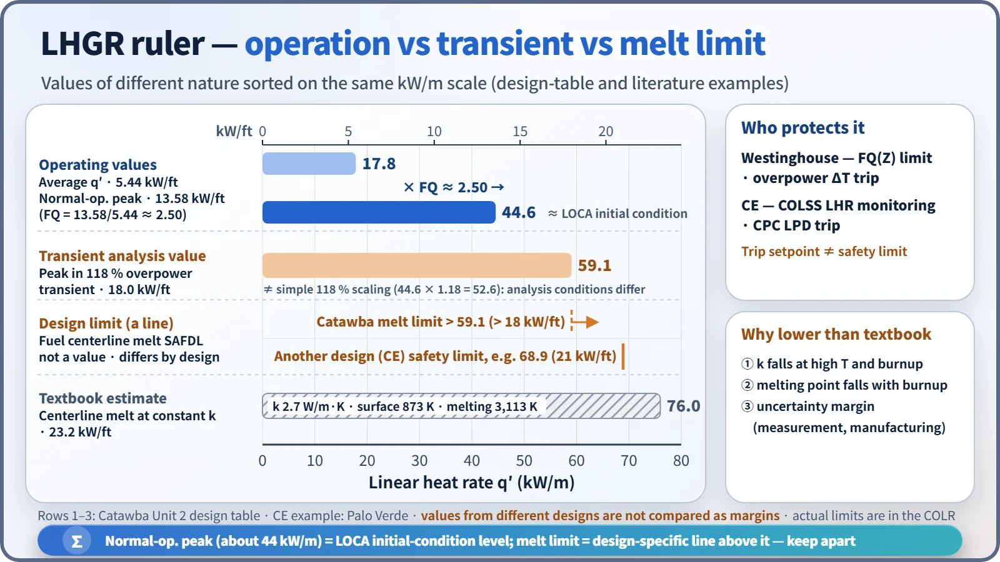
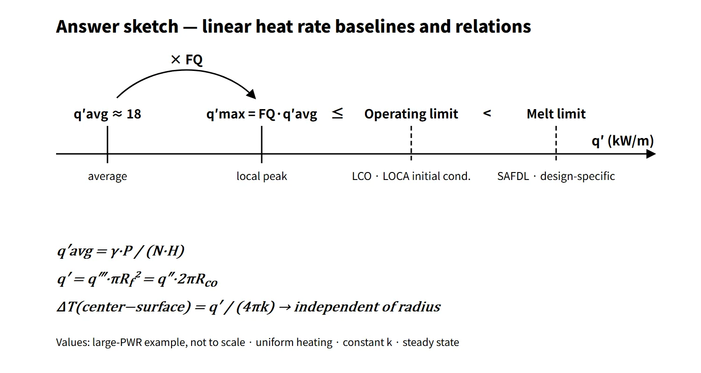

Thermal Hydraulics & Thermodynamics · C-TH-009
Linear Heat Rate and Power Density (LHGR) — Dividing One Power by Length, Volume and Mass
One core thermal power divided by rod length, pellet volume, core volume and uranium mass, with the limits and worked calculations built on it.
The linear heat rate (linear heat generation rate, LHGR, q′) is the heat generated per unit length of fuel rod (kW/m). The core average is q′avg = γ·P/(N·H) and the local maximum is q′max = FQ·q′avg. The fuel limits that prevent centerline melting and cladding strain are set and monitored in terms of this q′.
"Power density" takes a different name depending on what the same thermal power is divided by. Divided by fuel volume it is the volumetric heat generation rate q‴ (W/cm³); divided by core volume it is the core power density (kW/L); divided by heavy-metal mass it is the specific power (kW/kgU). Many practical calculations mix these denominators.
Principle and mechanism
One power, four denominators
The FSAR design table of the Westinghouse 4-loop plant Catawba Unit 2 (3,411 MWt) shows all four quantities at once.
| Quantity | Definition (denominator) | Unit | Example value |
|---|---|---|---|
| Linear heat rate q′ | Total rod length N·H | kW/m | average 17.8 (5.44 kW/ft) |
| Fuel volumetric heat rate q‴ | Total pellet volume | W/cm³ | average about 338 (assumed pellet diameter) |
| Core power density | Core cylinder volume | kW/L | 104.5 |
| Specific power | Loaded uranium mass | kW/kgU | about 38.7 |
The four quantities are tied together as follows.
- q′ = q‴·πRf²: multiplying by the pellet cross-section gives the value per unit length (steady state, axial conduction neglected). Here q′ and q‴ refer to the heat generated in the fuel, γP.
- Core power density = P/Vcore = q‴·fV/γ: total pellet volume 9.82 m³ ÷ core volume 32.6 m³ = 0.30, so only about 30 % of the core volume is fuel. The rest is coolant, cladding and structure, which is why the core power density is about one third of the fuel q‴.
- Specific power = P/MU: 3,411 MW ÷ about 88.1 tU. If the specific power is constant, multiplying it by the operating days gives the burnup (MWd/tU).
- q′avg = γ·P/(N·H): γ is the fraction of heat generated in the fuel; the Westinghouse design-table value is 0.974. 0.974 × 3,411 MW ÷ (50,952 rods × 3.658 m) = 17.8 kW/m, matching the table.

Applying the same formulas to the APR1400 (core thermal power 3,983 MWt, 241 assemblies × 236 rods, active length 3.81 m) gives an average linear heat rate of about 17.9 kW/m. The core power density is about 100 kW/L for an equivalent-diameter cylinder of 3.647 m. Both are estimates calculated directly, not values from design documents.
Why the limit is set in kW/m
For a cylindrical pellet with uniform heat generation and constant thermal conductivity k, the center-to-surface temperature difference is ΔT = q′/(4πk). The radius does not appear. Making the pellet thicker leaves the centerline temperature unchanged at the same q′, so it is natural to set the fuel-melting limit on the linear heat rate rather than on the volumetric power density.
With the textbook constant k = 2.7 W/m·K and a surface temperature of 873 K, the q′ at which the UO₂ melting point (about 3,113 K) is reached is 4π × 2.7 × 2,240 ≈ 76 kW/m. Actual design melt-prevention linear heat rates are lower for three reasons: k falls at high temperature and high burnup, the melting point also drops with burnup, and a margin is kept for measurement and manufacturing uncertainty. "Independent of radius" also holds only for uniform heating, constant k and the same surface temperature.
Average and peak: linked by FQ
For rods of the same diameter, the heat-flux ratio equals the linear-heat-rate ratio. Hence q′max = FQ·q′avg. Dividing the normal-operation peak linear heat rate in the Catawba table, 13.58 kW/ft (44.6 kW/m), by the average of 5.44 kW/ft gives about 2.50 (2.496), the FQ of this design. In a one-dimensional (axial-only) problem, the axial peaking factor FZ alone links the average and the maximum.
Worked examples
Example 1 — Average fuel power density: 1,200 MWe at 33 % efficiency → 1,200 ÷ 0.33 = 3,636 MWt; 100,000 kg of fuel at 10 g/cm³ → 1.0×10⁷ cm³. Assuming all power is generated in the fuel (γ = 1), q‴ ≈ 364 W/cm³; with γ = 0.974 it is 354 W/cm³.
Example 2 — Linear heat rate from convection: rod diameter 8.6 mm, cladding surface 350 °C, coolant 300 °C, h = 21,803 W/m²·°C → q″ = 21,803 × 50 = 1.09 MW/m², and q′ = q″·πD = 29.5 kW/m.
Example 3 — Fraction of energy deposited in the fuel: 3,030 MWt over 30,000 rods × 3.5 m = 105 km of rod gives 28.9 kW/m on an all-power basis. Multiplying by the fraction deposited in the fuel, 3×10⁻¹¹/3.204×10⁻¹¹ = 0.936, gives q′avg ≈ 27.0 kW/m.
Example 4 — From peak to average in one dimension: rod diameter 1 cm, maximum linear heat rate 30 kW/m, FZ = 2.0 → q′avg = 15 kW/m, giving an average fuel power density of 191 W/cm³ and an average surface heat flux of 47.7 W/cm².
What it means in a plant
The linear heat rate has several baselines of different nature. Their numbers are close and easy to mix up, so distinguish them together with their basis.

- Normal-operation peak (about 43–45 kW/m): this level sets the initial stored energy and peak cladding temperature (PCT) in the LOCA analysis. The operating limit is FQ(Z) for Westinghouse plants and the linear heat rate (LHR) for CE plants. For example, the Palo Verde COLR gives 13.0 kW/ft (42.7 kW/m), and the NRC review material for the APR1400 cites an LCO limit of 13.6 kW/ft (44.6 kW/m).
- Fuel centerline melt prevention: a SAFDL that must not be exceeded during normal operation and anticipated operational occurrences (AOOs); its value differs by design. The Catawba table analyzes the peak in a 118 % overpower transient as 18 kW/ft (59.1 kW/m) and sets the melt-prevention linear heat rate above it at "> 18 kW/ft". Because 59.1 differs from a simple 118 % scaling (44.6 × 1.18 = 52.6), read it as reflecting a power distribution and peaking condition in the transient analysis that differ from normal operation. CE plants have used a steady-state peak linear heat rate safety limit of 21 kW/ft (68.9 kW/m).
- Cladding strain: when power rises during a transient, pellet thermal expansion strains the cladding. SRP 4.2 requires a uniform strain (elastic + plastic) of 1 % or less.
- Design and economics: under the same peak limit, the allowable average power is limit ÷ FQ. A power uprate needs either more or longer rods to lower the average, or power flattening to lower FQ. The APR1400's average linear heat rate being about 4 % higher than the OPR1000's (direct calculation about 17.2 kW/m) is a result of this balance.
Operational monitoring by reactor type
- Westinghouse plants: the linear heat rate is not monitored directly; instead FQ(Z) ≤ CFQ/P × K(Z) is confirmed by measurements with the movable incore detectors. Because the average linear heat rate is fixed by the power level, the FQ limit is in effect a peak linear-heat-rate limit. During transients, fuel melting is prevented by the overpower ΔT (OPΔT) trip and DNB by the overtemperature ΔT (OTΔT) trip.
- CE plants (OPR1000, APR1400): NUREG-1432 LCO 3.2.1 limits the linear heat rate (LHR) directly. COLSS synthesizes the three-dimensional power distribution from the fixed incore detector signals, calculates an "LHR-based power operating limit" and monitors that the actual core power stays below it. If COLSS is inoperable, the plant operates within the allowed region of a chart using CPC channel values. The CPC calculates the local linear heat rate from the excore detectors and control rod positions and generates the local power density (LPD) trip. Here LPD is not a volumetric power density but a quantity corresponding to the local linear heat rate. The high-LPD trip setpoint is set below the safety limit (on the conservative side) to account for calculation and measurement uncertainty and response time, so it is not equal to the safety limit.
Regulatory and design criteria
The criteria below are examples from the United States (US NRC); unit- and cycle-specific values are set in each plant's licensing documents.
| Basis | Gist |
|---|---|
| 10 CFR 50 Appendix A, GDC 10 | SAFDLs not exceeded during normal operation and AOOs |
| NUREG-0800 SRP 4.2 / 4.4 | No fuel centerline melting, 1 % cladding strain, thermal-hydraulic design table (average and peak linear heat rate) |
| 10 CFR 50.46(b) | LOCA PCT of 1,204 °C, etc. — the initial peak linear heat rate is an input |
| NUREG-1431 LCO 3.2.1 | Westinghouse FQ(Z) |
| NUREG-1432 LCO 3.2.1, SL 2.1.1 | CE LHR; safety limit related to fuel centerline melting |
| Technical Specifications and COLR | Unit- and cycle-specific limit values |
The definitions and conversion formulas have not changed over the years, but three things have. First, the limit values moved from the body of the Technical Specifications to the COLR (GL 88-16). Second, some CE plants replaced the "peak linear heat rate 21 kW/ft" safety limit with a "fuel centerline temperature" safety limit that decreases with burnup (e.g. 5,080 °F, reduced by 58 °F per 10 GWd/tU; plant-specific). Third, requirements to reflect the burnup-dependent degradation of thermal conductivity in fuel performance codes have been strengthened.
Easily confused pairs
| Item | Linear heat rate q′ | Fuel q‴ | Core power density | Specific power | Heat flux q″ |
|---|---|---|---|---|---|
| Denominator | Rod length | Pellet volume | Core volume | Heavy-metal mass | Cladding outer surface area |
| Unit | kW/m | W/cm³ | kW/L | kW/kgU | W/m² |
| PWR example | average 17.8 | about 338 | about 100 | about 39 | average 0.6 MW/m² |
| Mainly tied to | Centerline melting, LOCA PCT | Neutron flux (Ef·Σf·φ) | Core size, economics | Burnup rate | DNB, surface temperature |
The core power density and the fuel q‴ differ by a factor of about 3. Always state the reference volume.
Key points at a glance
- Definition: linear heat rate q′ = heat generated per unit length of fuel rod (kW/m, kW/ft).
- Average: q′avg = γ·P/(N·H), γ ≈ 0.974 (fraction of heat generated in the fuel).
- Maximum: q′max = FQ·q′avg (FZ in a one-dimensional problem).
- Conversions: q′ = q‴·πRf² = q″·2πRco.
- Power densities: core basis kW/L (about 100), fuel basis W/cm³ (about 340), specific power kW/kgU (about 39).
- Basis of the limit: ΔT = q′/(4πk) → independent of radius → the melt limit is in kW/m.
- Baselines: normal-operation peak about 44 kW/m (LOCA initial condition) < melt-prevention limit (design-specific, e.g. > 59 kW/m).
- Monitoring: Westinghouse FQ(Z) and OPΔT; CE COLSS (LHR) and the CPC LPD trip.
